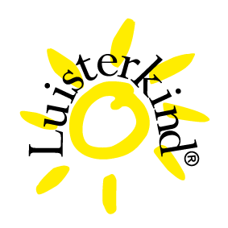

Wat is een Luisterkind Afstemming?
Een luisterkind afstemming is een gesprek met een ziel op afstand. Je zult denken dat dit alleen voor kinderen is, maar niets is minder waar. Namelijk op alles wat energie heeft kan worden afgestemd.

Denk daarbij aan je huisdieren die onrustig zijn, of een dierbare die je heel graag nog wat wilt vragen omdat hij of zij plotseling overleden is. Of wanneer je een vraag hebt over jezelf kun je ook gewoon bij mij terecht.
Wat ik doe? Ik maak contact met jou, met jouw ziel. Of met de persoon of huisdier voor wie je de afstemming aanvraagt. Alles wat ik voel, weet of zie schrijf ik op. Daar komt een verhaal uit en dat krijg jij op papier. Binnen 14 dagen heb jij een mooi document in je mailbox met alle antwoorden op jouw vragen. Misschien zul je niet alles direct herkennen, maar lees het na een aantal maanden nog eens. En wellicht zul je de verandering ineens wel zien!